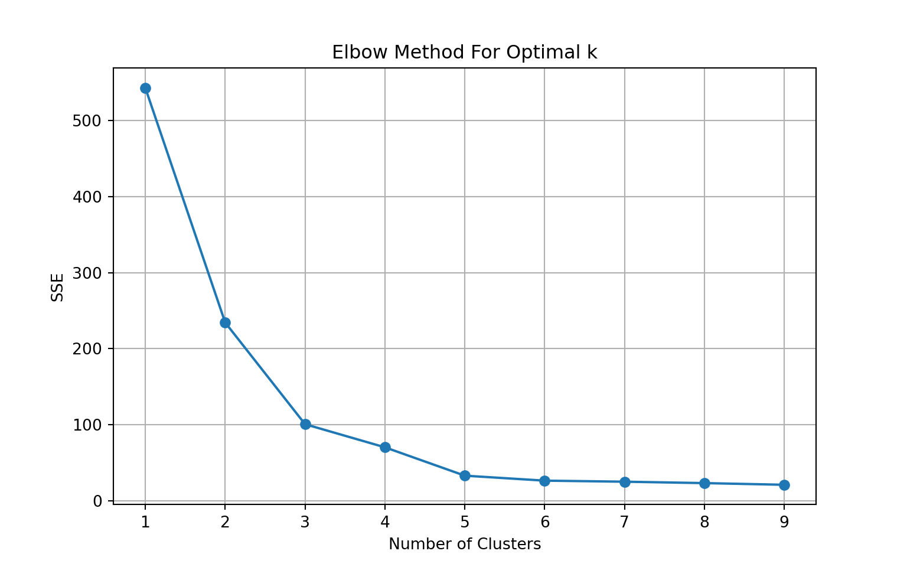
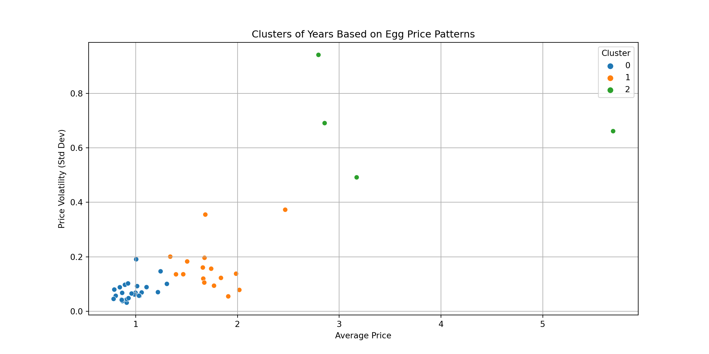
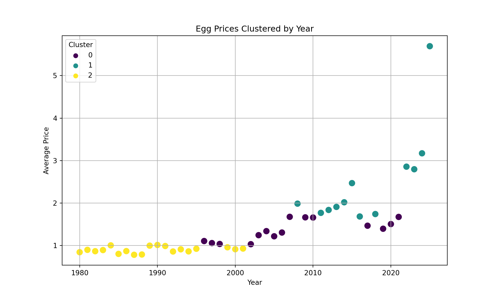
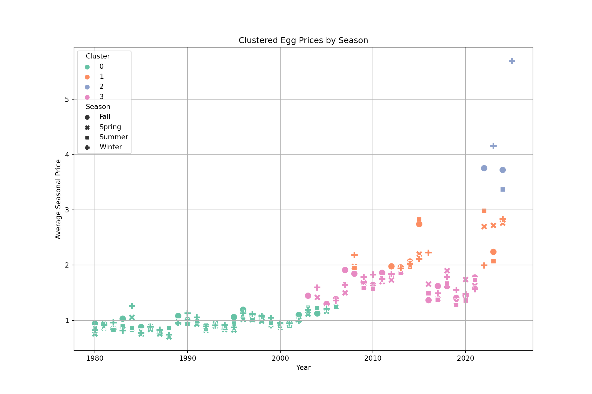
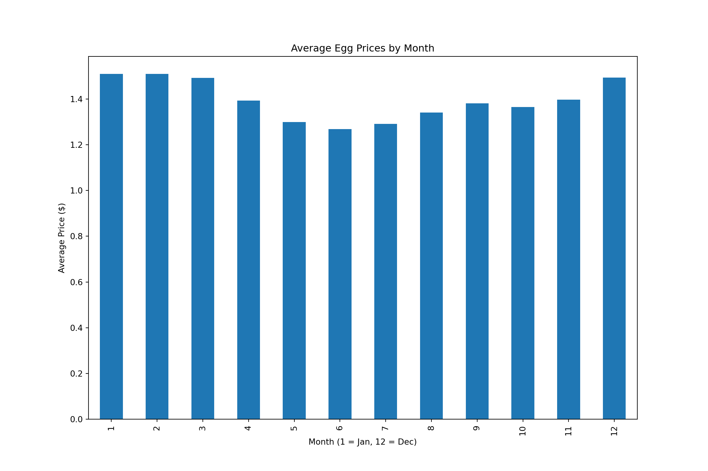
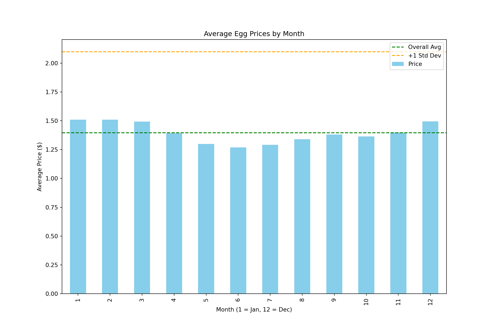
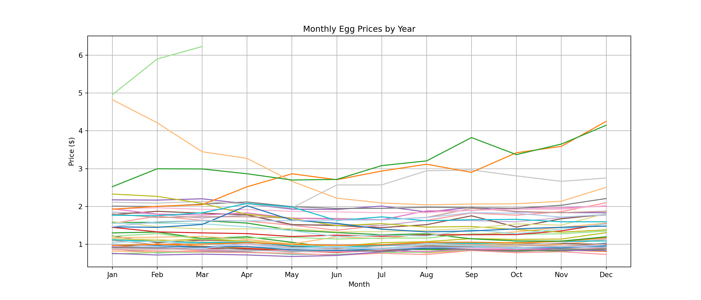
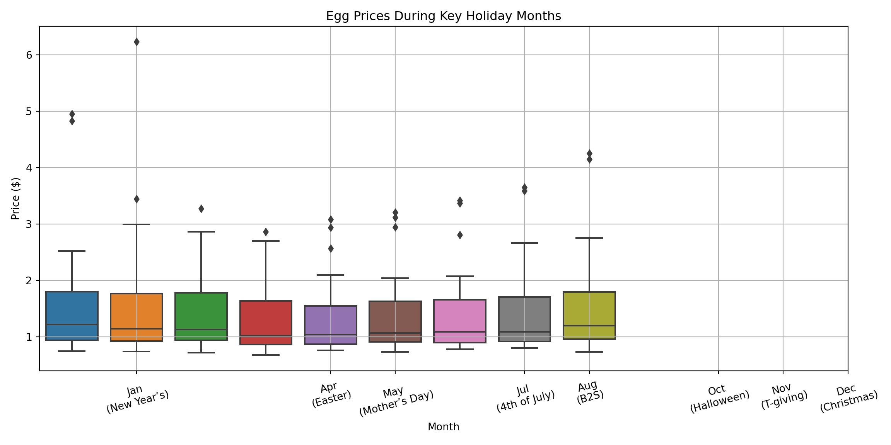
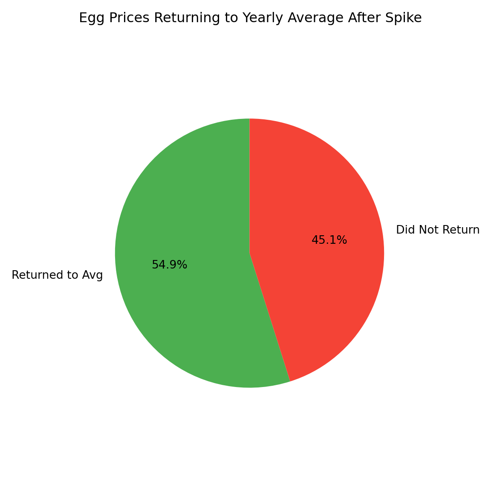

As we’ve seen, egg prices haven’t followed a straightforward trajectory. What once seemed like a stable grocery item has shown unexpected volatility, prompting deeper investigation. Through our descriptive analysis, we identified key pricing trends and structural shifts over time. Forecasting methods then helped us project future price movements, while regression analysis isolated the most influential drivers of these changes. Together, these approaches laid the groundwork for our clustering analysis—where we aim to uncover hidden patterns in pricing behavior that traditional models may overlook.
Past descriptive work highlighted a long-term upward trend in egg prices from 1980 through 2023, with early decades showing relative stability and recent years marked by increased volatility. Prices ranged broadly from $0.68 to nearly $5 per dozen, reflecting heightened market sensitivity to economic conditions and supply disruptions.
Time series models such as ARIMA(0,1,1) and the Drift method were applied to forecast future egg prices. These models consistently projected continued price increases, with ARIMA producing the best fit. However, all models indicated substantial uncertainty due to external shocks like inflation and pandemics.
We built a regression model using supply- and demand-side variables to explain egg price shifts. Bird flu and energy prices showed limited long-term impact. Key drivers were inflation (CPI), corn prices as feed costs, and real disposable personal income (RDPI). After refining for multicollinearity and adding interaction terms, inflation and consumer purchasing power emerged as the strongest long-term influencers.
Building on the foundational insights gained from the descriptive, forecasting, and regression analyses, the next step involves applying clustering techniques to uncover deeper patterns and structural shifts in egg price behavior over time. While previous analyses highlighted overall trends, key drivers, and forecasted price trajectories, clustering allows us to segment the data into meaningful groups based on similarities in price levels, volatility, and seasonality. This approach provides a more nuanced understanding of how egg prices have evolved through distinct market regimes and economic environments, setting the stage for more targeted interpretation and strategy.

To determine the optimal number of clusters for our analysis, we used the Elbow Method, which plots the Sum of Squared Errors (SSE) against different values of k — the number of clusters. SSE measures how tightly grouped the data points are within each cluster; lower SSE values indicate more cohesive clusters.
As shown in the graph above, SSE drops sharply from 1 to 3 clusters, then begins to level off. This “elbow” — the point where adding more clusters yields diminishing returns in reducing SSE — typically signals the optimal cluster count.
In our case, the bend occurs between 3 and 4 clusters, and we selected 4 clusters to better capture subtle distinctions in the data without overcomplicating the model. This balance allows us to uncover meaningful groupings, revealing deeper insights into egg price behaviors that traditional methods might miss. 🥚📈✨
After determining that four clusters best represent the underlying patterns in the data, we clustered egg prices by time to highlight how pricing behavior has evolved over the years. This approach groups similar time segments based on trends in price levels and volatility, revealing distinct periods in the egg market from 1980 through 2025.
Cluster 0 covers the early 1980s through the early 2000s and is characterized by low, stable prices — reflecting a long period of minimal volatility and steady market conditions. Cluster 1 spans from the early 2000s into the mid-2010s, showing a gradual upward price trend, likely influenced by inflation and shifting economic factors, yet remaining relatively stable compared to later periods.
Cluster 2 emerges post-2008 financial crisis, capturing a shift toward higher average prices and increased volatility. This period likely reflects rising production costs, economic recovery effects, and supply chain challenges. Cluster 3 represents the most recent years, especially the 2020s, featuring the highest prices and the most extreme fluctuations in the dataset. These dramatic changes are probably linked to the COVID-19 pandemic, inflation, and avian flu outbreaks disrupting both supply and demand.
Clustering by time offers a structured lens into how egg prices have transitioned from decades of relative calm to a recent era marked by sharp increases and volatility.

Looking at the data through the lens of three clusters based on average price and price volatility (standard deviation) reveals distinct periods in egg price behavior. Cluster 0 (blue) represents years with low prices and low volatility, reflecting stable market conditions. Cluster 1 (orange) includes years with moderate prices and slightly higher volatility, indicating transitional or moderately unstable periods. Cluster 2 (green) stands out with significantly higher prices and extreme volatility, likely linked to recent economic shocks such as post-2020 inflation and supply chain disruptions. This classification highlights how egg prices have evolved over time, uncovering meaningful patterns that simple averages would overlook. The years grouped in Cluster 2, as clear outliers with both high prices and unpredictability, deserve particular attention in forecasting and policy considerations.

Egg prices have been clustered by year to provide a time-series perspective on how pricing patterns evolved from 1980 to 2025. The x-axis represents the years, while the y-axis shows the average annual egg price. Each point is color-coded according to one of three clusters identified using K-Means clustering. Cluster 2 (yellow) includes the earliest years, roughly from 1980 through the early 2000s, characterized by low and stable prices and representing a baseline era before market volatility increased. Cluster 0 (purple) captures a transitional phase spanning the mid-1990s through the 2010s, marked by moderate price increases. Cluster 1 (teal) consists mainly of recent years, especially post-2015, with notable spikes in 2022–2023, which were likely impacted by inflation, supply chain disruptions, or avian flu outbreaks. This clustering not only segments the data into distinct pricing regimes but also reveals that recent high prices are not just part of a gradual upward trend, but rather belong to a separate, statistically distinct era. Such insights are valuable for forecasting, shaping policy, or understanding shifts in consumer behavior.

Clustered egg prices by season over time reveal how both seasonal and long-term pricing patterns have evolved. The x-axis spans from 1979 to 2023, while the y-axis represents the average seasonal price for each year. Data points are color-coded by cluster (0–3), and shaped by season: Fall (●), Spring (✖), Summer (■), and Winter (✚).
Cluster 0 (green) covers years prior to 2003, marked by low, stable prices—mostly under $1.50 across all seasons. Cluster 1 (orange), spanning from the mid-2000s to early 2020s, shows moderate increases, with prices generally between $1.50 and $3.00, possibly influenced by inflation or rising production costs. Cluster 3 (pink) represents a transitional phase from 2005 to 2020 with relatively stable prices slightly below $2.00. Cluster 2 (blue) includes 2022–2023 and stands out with extreme volatility and sharply elevated prices—some exceeding $5.50—likely driven by supply shocks like avian flu, inflation, and rising feed costs.
The analysis also confirms seasonal effects: Winter and Spring often show higher prices than Summer and Fall, regardless of the overall price level. Rather than following a smooth upward trend, egg prices have shifted through distinct regimes. Clustering helps capture these structural shifts and seasonal dynamics—valuable for improving forecasts, shaping policy, and informing market strategies.

Average egg prices, aggregated by calendar month (1 = January, 12 = December), reveal a clear seasonal pattern: prices tend to peak in January, February, and December, while dipping during the summer months, especially from May through July.
This seasonal trend helps contextualize the time-based clustering of egg prices. For example, periods that frequently fall into higher-priced clusters (like Cluster 3) often coincide with winter months, when prices naturally rise due to factors like holiday demand or colder-weather supply constraints. In contrast, the more stable, lower-priced clusters (such as Cluster 0 or 1) align with months that typically show less volatility—like those in summer.
These patterns suggest that even within a given year, seasonality plays a significant role in shaping pricing behavior and may influence how certain time periods are grouped in cluster-based analysis.

The monthly average price of eggs, aggregated over all years in the dataset, is displayed along with two key reference lines: a green dashed line showing the overall average price across all months, and an orange dashed line marking one standard deviation above that average, helping to highlight unusually high prices. Egg prices tend to be highest in January, February, March, and December—months with averages near or above the overall mean—while May through September, especially June and July, typically have lower prices well below the average.
These seasonal patterns support the trends observed in the clustering analysis. Months that consistently show above-average prices, especially near or above the one standard deviation line, are likely linked to high-price or volatile clusters. Conversely, the more stable, lower-priced months align with clusters characterized by less variability and lower prices. Together, these insights provide a clearer statistical context for how seasonality shapes the structure of egg price behavior over time.

Monthly egg prices are shown across multiple years, with each line representing a single year and the x-axis spanning from January to December. The y-axis shows prices in dollars. While most years follow a stable pattern with prices ranging between $0.80 and $2.50, a few years stand out with significant price spikes exceeding $6 in the early months—clear outliers in the dataset. Seasonal trends are evident, with some years showing price increases toward the end of the year, likely due to holiday demand, while others remain relatively flat or show minor fluctuations.
These patterns highlight natural groupings within the data that clustering methods like K-means or hierarchical clustering can formally identify. By considering each year as a data point characterized by 12 monthly price features, clustering helps group years with similar price behaviors and seasonal patterns. Such groupings are valuable for detecting anomalies, understanding pricing trends, and enhancing forecasting accuracy by recognizing years with comparable market dynamics.

Egg prices during key holiday months show distinct distribution patterns across multiple years. The interquartile range (IQR) captures the middle 50% of prices, with median values generally stable between $0.90 and $1.30. However, notable outliers appear, especially in January and April, where prices in some years spike above $3, including one instance exceeding $6. While most years follow predictable pricing trends, these spikes suggest occasional deviations likely caused by supply disruptions or heightened demand. This variability aligns with clustering findings, indicating groups of years with typical price ranges and others with unusually high holiday prices. Recognizing these clusters helps explain abnormal pricing behavior and enhances forecasting accuracy.
## Top 3 Years for Month 1:
## Year
## 2025 4.953
## 2023 4.823
## 2024 2.522
## 2016 2.328
## 2008 2.175
## Name: 1, dtype: float64
##
## Top 3 Years for Month 3:
## Year
## 2025 6.227
## 2023 3.446
## 2024 2.992
## 2008 2.203
## 2015 2.133
## Name: 3, dtype: float64
##
## Top 3 Years for Month 4:
## Year
## 2023 3.270
## 2024 2.864
## 2022 2.520
## 2014 2.119
## 2018 2.081
## Name: 4, dtype: float64
##
## Top 3 Years for Month 5:
## Year
## 2022 2.863
## 2024 2.699
## 2023 2.666
## 2014 1.996
## 2018 1.987
## Name: 5, dtype: float64
##
## Top 3 Years for Month 7:
## Year
## 2024 3.080
## 2022 2.936
## 2015 2.570
## 2023 2.094
## 2008 2.011
## Name: 7, dtype: float64
##
## Top 3 Years for Month 8:
## Year
## 2024 3.204
## 2022 3.116
## 2015 2.943
## 2023 2.043
## 2014 1.979
## Name: 8, dtype: float64
##
## Top 3 Years for Month 10:
## Year
## 2022 3.419
## 2024 3.370
## 2015 2.808
## 2023 2.072
## 2012 1.960
## Name: 10, dtype: float64
##
## Top 3 Years for Month 11:
## Year
## 2024 3.649
## 2022 3.589
## 2015 2.664
## 2023 2.138
## 2014 2.032
## Name: 11, dtype: float64
##
## Top 3 Years for Month 12:
## Year
## 2022 4.250
## 2024 4.146
## 2015 2.751
## 2023 2.507
## 2014 2.210
## Name: 12, dtype: float64Top egg price years across various months reveal a clear clustering pattern centered on specific years—particularly 2022, 2023, and 2024. These years consistently rank among the highest price points across nearly every holiday month, indicating a distinct high-price cluster. In contrast, earlier years such as 2014 and 2015 appear sporadically but at generally lower price levels, representing a separate, lower-price cluster. This pattern suggests a structural shift or shock beginning around 2022, likely driven by factors like inflation, supply chain disruptions, or avian flu outbreaks. The repeated prominence of recent years reinforces the idea of temporal clustering, where certain periods experience systematically higher egg prices compared to others.
## Year Month Price ... Above_Yearly_Avg Next_Month_Price Returns_To_Avg
## 0 1980 1 0.879 ... True 0.774 True
## 1 1980 2 0.774 ... False 0.812 True
## 2 1980 3 0.812 ... False 0.797 True
## 3 1980 4 0.797 ... False 0.737 True
## 4 1980 5 0.737 ... False 0.731 True
## .. ... ... ... ... ... ... ...
## 538 2024 11 3.649 ... True 4.146 False
## 539 2024 12 4.146 ... True 4.953 False
## 540 2025 1 4.953 ... False 5.897 False
## 541 2025 2 5.897 ... True 6.227 False
## 542 2025 3 6.227 ... True NaN False
##
## [543 rows x 7 columns]Monthly egg prices from 1980 to 2025 include indicators showing when prices exceeded the yearly average (Above_Yearly_Avg), the price in the following month (Next_Month_Price), and whether prices returned to the yearly average afterward (Returns_To_Avg).
Earlier years, such as 1980, typically exhibited price spikes above the yearly average that quickly reverted to the mean, indicating short-lived fluctuations tightly clustered around stable averages. However, beginning around 2022, prices not only surged significantly above the yearly average but also remained elevated for consecutive months without returning to typical levels. Notably, prices in late 2024 and into 2025 stayed consistently above average, breaking from previous patterns.
This shift highlights a structural change in price behavior, marking a break from historical clustering where prices oscillated around a steady mean. Instead, recent years form a distinct, persistent high-price cluster, reinforcing the idea of a new, elevated pricing regime emerging in the egg market.

54.9% of egg price spikes above the yearly average eventually returned to that average, while 45.1% did not.
Linked to earlier observations, this highlights a significant shift in egg price behavior over time. Historically, most price spikes were temporary, reflecting a clustering pattern where prices fluctuated around a stable annual mean. However, the substantial 45.1% of spikes that failed to revert—especially in recent years like 2022 to 2025—indicates a breakdown in this mean-reverting trend.
In essence, these figures quantify the erosion of historical price clustering, showing how recent structural changes such as supply chain disruptions, inflation, and avian flu outbreaks have caused egg prices to remain elevated for prolonged periods, forming persistent high-price clusters that diverge from past patterns.
Clustering provided a powerful lens through which to interpret the structural shifts, seasonal dynamics, and emerging pricing regimes in the egg market. By segmenting the data across time, year, and season, we uncovered distinct clusters that extended the story told by our descriptive, forecasting, and regression models—revealing how egg prices have evolved from decades of stability to an era defined by persistent volatility. This final layer of analysis emphasized not only the influence of inflation and external shocks but also the breakdown of mean-reverting behavior in recent years. These insights affirm that egg prices are no longer governed by simple trends, but by complex and evolving market conditions.